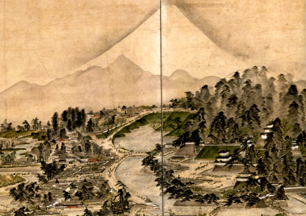

| 最 新 号 | バックナンバー | 添付地図目録 | 投 稿 規 程 |
Vol.50 No.１ （通巻１９７号） ２０１２年
| 【論説】 | サンゴ礁浅海域における保全を目的とした地図の作製 | 鈴木倫太郎・長谷川均・前川 聡・柴田 剛・佐川鉄平・後藤慶之・市川清士 |
| キーワード：サンゴ礁、浅海域、オルソフォト、空中写真、環境保全 | ||
| 【資料・添付地図解説】 | 鍬形蕙斎筆「江戸一目図」に見る江戸 | 尾島 治 |
| キーワード：江戸一目図屏風、鍬形蕙斎、景観図、鳥瞰図、江戸名所絵、略画式 | ||
| 【書評・紹介】 | 地図文化史上の広輿図 | 河村克典 |
| 【書評・紹介】 | 日本の居場所がよくわかる 東アジア地図帳 | 清水靖夫 |
| 【特別会員名簿】 | ||
| 【リレーメッセージ：地図・地図学への思い】 | 初期の地形図を求めて地図学会に入会 | 清水靖夫 |
| 【学会記事】 | ||
| 【お詫びと訂正】 | 第49巻4号に掲載されたICC・ICA参加報告記事の一部追加等について | 日本国際地図学会編集委員会 |
| 【添付地図】 | 江戸一目図屏風 | |
|
≪No.50 No.1 表紙≫ |
|
|
|
|
≪No.50 No.1 添付地図≫ |
|
 本図を許可なく複製・利用することを禁止します。
|